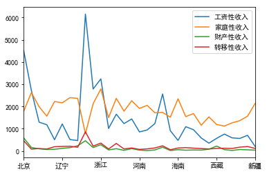

数据是由数据对象组成，一个数据对象代表一个实体。每个数据对象都有不同特征，称为数据的属性(attribute)。
数据的属性包含：
描述数据的中心趋势的统计量主要由：均值、中位数和众数。
加权平均：
## 导入数据
import pandas as pd
data = pd.read_excel('./data/居民人均可支配收入.xlsx', index_col=0)
data.head()
| 居民人均可支配收入中位数（元） | 居民人均可支配收入平均数(元) | |
|---|---|---|
| 2013年第1季度 | 4117.2 | 5006.1 |
| 2013年第2季度 | 3606.2 | 4043.0 |
| 2013年第3季度 | 3976.8 | 4507.4 |
| 2013年第4季度 | 3931.9 | 4754.3 |
| 2014年第1季度 | 4693.6 | 5562.2 |
## 计算均值
data.mean(axis=0)
居民人均可支配收入中位数（元） 4700.211111
居民人均可支配收入平均数(元) 5399.833333
dtype: float64
对于非对称数据，数据中心更好的度量是中位数，中位数是有序数值的中间值。
## 计算中位数
data.median(axis=0)
居民人均可支配收入中位数（元） 4726.80
居民人均可支配收入平均数(元) 5351.55
dtype: float64
众数是集合中出现最频繁的值，根据最高频率对应不同的值的个数，可分为单峰(unimodal)、双峰(bimodal）等。在极端情况下，如果每个数据仅出现一次，则没有众数。
对于适度倾斜的单峰数据，有如下经验关系：
data.mode(axis=0) ##所有数据都只出现了一次
| 居民人均可支配收入中位数（元） | 居民人均可支配收入平均数(元) |
|---|
import scipy.stats as stats
from scipy.stats import skewnorm
fig = plt.figure(figsize=(16,4))
ax1 = plt.subplot(1,3,1)
a = 4
x1 = np.linspace(skewnorm.ppf(0.0001, a), skewnorm.ppf(0.9999, a), 100)
rv = skewnorm(a)
ax1.plot(x1, rv.pdf(x1), label='frozen pdf')
plt.xlabel(u'a)正倾斜数据', fontsize=15)
ax2 = plt.subplot(1,3,2)
x2 = np.linspace( - 3, 3, 1000)
ax2.plot(x2, stats.norm.pdf(x2, 0, 1))
plt.xlabel(u'b)对称数据', fontsize=15)
ax3 = plt.subplot(1,3,3)
a = -4
x3 = np.linspace(skewnorm.ppf(0.0001, a), skewnorm.ppf(0.9999, a), 100)
rv = skewnorm(a)
ax3.plot(x3, rv.pdf(x3), label='frozen pdf')
plt.xlabel(u'c)负倾斜数据', fontsize=15)
<matplotlib.text.Text at 0x23c391c3240>
度量数据的离散程度的指标包括极差、分位数、四分位数、百分位数和四分位数极差。五数概括可以用箱线图（盒图）显示，它对于离群点的是识别是有用的。
## 极差(range)
data.max() - data.min()
居民人均可支配收入中位数（元） 2460.8
居民人均可支配收入平均数(元) 3141.0
dtype: float64
## 第1个4分位数
data.quantile(1/4)
居民人均可支配收入中位数（元） 4172.95
居民人均可支配收入平均数(元) 4873.00
Name: 0.25, dtype: float64
## 四分位数极差
data.quantile(3/4) - data.quantile(1/4)
居民人均可支配收入中位数（元） 985.325
居民人均可支配收入平均数(元) 951.025
dtype: float64
离群点的识别规则为：挑选落在第3个四分位数之上或第1个四分位数之下至少$1.5 \times IQR$处的值
## 箱线图
data.boxplot()
<matplotlib.axes._subplots.AxesSubplot at 0x23c39168f28>
方差(variance):
标准差(standard deviation) $\sigma$ 是方差 $\sigma^2$ 的平方根
## 方差
data.var()
居民人均可支配收入中位数（元） 416851.712810
居民人均可支配收入平均数(元) 626944.210588
dtype: float64
## 标准差
data.std()
居民人均可支配收入中位数（元） 645.640545
居民人均可支配收入平均数(元) 791.798087
dtype: float64
data.describe()
| 居民人均可支配收入中位数（元） | 居民人均可支配收入平均数(元) | |
|---|---|---|
| count | 18.000000 | 18.000000 |
| mean | 4700.211111 | 5399.833333 |
| std | 645.640545 | 791.798087 |
| min | 3606.200000 | 4043.000000 |
| 25% | 4172.950000 | 4873.000000 |
| 50% | 4726.800000 | 5351.550000 |
| 75% | 5158.275000 | 5824.025000 |
| max | 6067.000000 | 7184.000000 |
分位数图是一种观察单变量数据分布的简单有效方法,首先显示给定属性的所有数据，其次它绘出了分数数信息。
fig = plt.figure(figsize=(12,4))
ax = fig.add_subplot(121)
x = data.iloc[:,0]
stats.probplot(x, plot=ax)
plt.ylabel(u'居民人均可支配收入中位数', fontsize=13)
plt.xlabel(u'f 值', fontsize=13)
ax = fig.add_subplot(122)
x = data.iloc[:,1]
stats.probplot(x, plot=ax)
plt.ylabel(u'居民人均可支配收入平均数', fontsize=13)
plt.xlabel(u'f 值', fontsize=13)
plt.show()
q-q图对着另一个对应的分位数，绘制一个单标量分布的分位数。它可使得用户可以观察从一个分布到另一个分布是否有漂移。
import statsmodels.api as sm
fig = plt.figure()
ax = fig.add_subplot(111)
a = sm.qqplot_2samples(data.iloc[:,0], data.iloc[:,1], xlabel=u'居民人均可支配收入中位数', ylabel=u'居民人均可支配收入平均数', line='r' ,ax=ax)
data.hist(bins=10,figsize=(12,4))
array([[<matplotlib.axes._subplots.AxesSubplot object at 0x0000023C3ACC5A58>,
<matplotlib.axes._subplots.AxesSubplot object at 0x0000023C3AD61668>]], dtype=object)
散点图是确定两个数值变量之间看上去是否存在联系、模式或趋势的最有效图形方法之一。
data.plot.scatter(*data.columns)
<matplotlib.axes._subplots.AxesSubplot at 0x23c39342748>
data2 = pd.read_excel('.\data\各省份收入数据.xlsx', index_col=0)
data2.head()
| 工资性收入 | 家庭性收入 | 财产性收入 | 转移性收入 | |
|---|---|---|---|---|
| 北京 | 4524.25 | 1778.33 | 588.04 | 455.64 |
| 天津 | 2720.85 | 2626.46 | 152.88 | 79.64 |
| 河北 | 1293.50 | 1988.58 | 93.74 | 105.81 |
| 山西 | 1177.94 | 1563.52 | 62.70 | 86.49 |
| 内蒙古 | 504.46 | 2223.26 | 73.05 | 188.10 |
data2.plot()
<matplotlib.axes._subplots.AxesSubplot at 0x23c3934b438>

data2.plot(kind='bar', stacked=True, color=['blue','gold', 'green', 'red'], figsize=(10,5))
<matplotlib.axes._subplots.AxesSubplot at 0x23c3aea0d68>
data2.plot.area(stacked=True)
<matplotlib.axes._subplots.AxesSubplot at 0x23c392ee860>
data2.plot.pie(y=data2.columns[0], figsize=(10,10))
<matplotlib.axes._subplots.AxesSubplot at 0x23c3b2c60f0>
from scipy import stats, integrate
import seaborn as sns
ax = sns.boxplot(data=data2)
ax = sns.stripplot(data=data2, jitter=True, edgecolor="gray")
sns.violinplot( data=data2, size=6)
<matplotlib.axes._subplots.AxesSubplot at 0x23c3b864668>
sns.jointplot(x=data2.columns[0], y=data2.columns[1], data=data2, size=5)
<seaborn.axisgrid.JointGrid at 0x23c3b8825f8>
g = sns.PairGrid(data2, hue=data2.columns[2])
g.map(plt.scatter, s=50, edgecolor="white")
g.map_offdiag(plt.scatter)
g.add_legend();
在诸如聚类、离群点分析和最邻近分类等数据挖掘应用中，我们需要评估对象之间相互比较的相似性与相异性。相似性和相异性都称为临近性（proximity），如果两个对象$i$和$j$不相似,则它们相似性度量值为0,如果完全相似则为1。因此，我们可以构造数据的想异性矩阵，用来表示$n$个对象两两之间的邻近度。
其中$d(i,j)$是对象之间的想异性，一般而言，$d(i,j)$是一个非负的数值，对象$i$和$j$越接近，其值越接近0；如果越不同，该值越大。
标称属性有多个状态，设其状态数目为$M$，这些状态用一组整数表示（整数只用书数据处理，不代表特定顺序）。两个对象$i$和$j$之间的相异性可以根据不匹配率来计算：
其中，$m$是匹配的数目，即($i$和$j$取值相同状态的属性值），而$p$是刻画对象属性总数。
data3 = pd.DataFrame({
'test-1': ['A', 'B', 'C', 'A'],
'test-2': [u'优秀',u'一般',u'好',u'优秀'],
'test-3': [45, 22, 64, 28]
})
data3
| test-1 | test-2 | test-3 | |
|---|---|---|---|
| 0 | A | 优秀 | 45 |
| 1 | B | 一般 | 22 |
| 2 | C | 好 | 64 |
| 3 | A | 优秀 | 28 |
## 计算test-1
test1 = data3['test-1'].values
dis_1 = np.zeros([len(test1), len(test1)])
for i in range(len(test1)):
for j in range(i, len(test1)):
if test1[i] != test1[j]:
dis_1[j ,i] =1
dis_1
array([[ 0., 0., 0., 0.],
[ 1., 0., 0., 0.],
[ 1., 1., 0., 0.],
[ 0., 1., 1., 0.]])
我们看到除了对象1和4（$d(4,1)=0$）之外，其他都不相似。
相似性也可以用下式公式计算：
我们考虑对称和非对称二元属性刻画对象的想异性和相似性度量。
| 1 | 0 | |
|---|---|---|
| 1 | q | r |
| 0 | s | t |
对于对对称的二元相异性，可以定义为：
对于非对称的二元相异性，可以为t是不重要的，因此可以定义为：
同样，我们也可以基于相似性来度两个个属性的差别，如对于非对称的二元相似性可以用下式计算：
（11）式中的系数$sim(i,j)$被称为Jaccard系数，它在文献中被广泛应用。
data4 = pd.DataFrame([['M', 'Y', 'N', 'P', 'N', 'N', 'N'],['M', 'Y', 'Y', 'N', 'N', 'N','N'],['F', 'Y', 'N', 'P', 'N', 'P', 'N']])
data4.columns = ['gender', 'fever', 'cough', 'test-1','test-2','test-3','test-4']
data4.index = ['Jace', 'Jim', 'Mary']
data4
| gender | fever | cough | test-1 | test-2 | test-3 | test-4 | |
|---|---|---|---|---|---|---|---|
| Jace | M | Y | N | P | N | N | N |
| Jim | M | Y | Y | N | N | N | N |
| Mary | F | Y | N | P | N | P | N |
## 转换成数值型
label_map = {'Y': 1, 'N': 0, 'P': 1}
data4_num = data4.copy()
for column in data4.columns:
data4_num[column] = data4[column].map(label_map)
data4_num.drop('gender', axis=1, inplace=True)
data4_num
| fever | cough | test-1 | test-2 | test-3 | test-4 | |
|---|---|---|---|---|---|---|
| Jace | 1 | 0 | 1 | 0 | 0 | 0 |
| Jim | 1 | 1 | 0 | 0 | 0 | 0 |
| Mary | 1 | 0 | 1 | 0 | 1 | 0 |
## 调用scipy计算jaccard 相异性
from scipy.spatial.distance import jaccard
jaccard(data4_num.iloc[0,:], data4_num.iloc[1,:])
0.66666666666666663
## 或者使用sklearn 计算jaccard
from sklearn.metrics import jaccard_similarity_score
jaccard_similarity_score(data4_num.iloc[0,:], data4_num.iloc[1,:])
0.66666666666666663
## 或者调用pdist计算所有jaccard
from scipy.spatial.distance import pdist
pdist(data4_num, metric='jaccard')
array([ 0.66666667, 0.33333333, 0.75 ])
计算数值属性的相异性，一般我们常用的是距离。我们最常用的距离是欧几里得距离，其他被广泛应用的距离还有：曼哈顿距离、闵可夫斯基距离。
距离公式都需要满足如下四个条件：
欧几里得距离(euclidean)：
曼哈顿距离(Manhattan)：
闵可夫斯基距离(Minkowski):
切比雪夫距离（Chebyshev）或称上界距离（$L_{max}$）,是$L \to \infty$时闵可夫斯基距离的推广：
from scipy.spatial import distance
x1 = np.arange(0,5)
x2 = np.arange(5,10)
print('x1:',x1)
print('x2:',x2)
x1: [0 1 2 3 4]
x2: [5 6 7 8 9]
## 欧几里德距离
distance.euclidean(x1, x2)
11.180339887498949
## 闵可夫斯基距离
distance.minkowski(x1, x2, p=3) ## p=1时为曼哈顿距离 p=2时为欧几里得距离
8.5498797333834844
## 切比雪夫距离
distance.chebyshev(x1, x2)
5
##计算矩阵的距离
## 欧几里德距离
pdist(data4_num, metric='euclidean')
## 闵可夫斯基距离
pdist(data4_num, metric='minkowski', p=5) ## p=1时为曼哈顿距离
## 切比雪夫距离
pdist(data4_num, metric='chebyshev')
array([ 1., 1., 1.])
序数属性的值之间具有意义的序（rank），而相继值之间的值未知。序数属性的处理与数值属性非常相似。
##处理data3的test-2
data3
| test-1 | test-2 | test-3 | |
|---|---|---|---|
| 0 | A | 优秀 | 45 |
| 1 | B | 一般 | 22 |
| 2 | C | 好 | 64 |
| 3 | A | 优秀 | 28 |
## 转换成数值型
test_2_map = {u'优秀': 3,
u'好': 2,
u'一般':1
}
x = data3['test-2'].map(test_2_map)
x
0 3
1 1
2 2
3 3
Name: test-2, dtype: int64
## 规范化
x_scale = (x - 1) / (x.max() - 1)
x_scale
0 1.0
1 0.0
2 0.5
3 1.0
Name: test-2, dtype: float64
## 计算欧几里得距离
dis_2 = pdist(x_scale.values.reshape(-1,1))
dis_2
array([ 1. , 0.5, 0. , 0.5, 1. , 0.5])
前面我么分别介绍了不同类型属性的处理方法，但是在实际中，我们数据处理的属性往往混合了不同类型的属性。我们可以分别计算每种类型属性的相异性，然后将值映射到$[0,1]$区间，再进行加权平均：
其中，如果$x{if}=0$或$x{jf}=0$，指示符$\delta{ij}^{(f)}=0$,并且$f$是非对称的二元属性；否则$\delta{ij}^{(f)}=1$。
## 对data3进行处理
data3
| test-1 | test-2 | test-3 | |
|---|---|---|---|
| 0 | A | 优秀 | 45 |
| 1 | B | 一般 | 22 |
| 2 | C | 好 | 64 |
| 3 | A | 优秀 | 28 |
dis_1
array([[ 0., 0., 0., 0.],
[ 1., 0., 0., 0.],
[ 1., 1., 0., 0.],
[ 0., 1., 1., 0.]])
dis_2
array([ 1. , 0.5, 0. , 0.5, 1. , 0.5])
## 计算test-3
dis_3 = pdist(data3['test-3'].values.reshape(-1,1),metric='minkowski',p=1) / (data3['test-3'].max() - data3['test-3'].min())
dis_3
array([ 0.54761905, 0.45238095, 0.4047619 , 1. , 0.14285714,
0.85714286])
## 转换dis_1
dis_1_ = np.array([1,1,0,1,1,1])
dis_all = np.sum((dis_1_, dis_2, dis_3), axis=0)/ 3
#dis_all = np.sum((dis_1_, dis_2, dis_3), axis=0)/ (2 + dis_1_)
dis_all
array([ 0.84920635, 0.65079365, 0.13492063, 0.83333333, 0.71428571,
0.78571429])
余弦相似性是一种度量，可以用于比较文档，或针对给定的查询词向量对文档排序。令$x$和$y$是两个待比较的向量，使用余弦相似函数，我们有：
余弦值为0意味着两个向量没有匹配，余弦值越接近1，匹配程度越大。
data5 = pd.DataFrame([[5,0,3,0,2,0,0,2,0,0],[3,0,2,0,1,1,0,1,0,1,],[0,7,0,2,1,0,0,3,0,0,],[0,1,0,0,1,2,2,0,3,0,]])
data5.columns = ['team', 'coach', 'hocky', 'baseball', 'soccer', 'penalty', 'score', 'win', 'loss', 'season']
data5
| team | coach | hocky | baseball | soccer | penalty | score | win | loss | season | |
|---|---|---|---|---|---|---|---|---|---|---|
| 0 | 5 | 0 | 3 | 0 | 2 | 0 | 0 | 2 | 0 | 0 |
| 1 | 3 | 0 | 2 | 0 | 1 | 1 | 0 | 1 | 0 | 1 |
| 2 | 0 | 7 | 0 | 2 | 1 | 0 | 0 | 3 | 0 | 0 |
| 3 | 0 | 1 | 0 | 0 | 1 | 2 | 2 | 0 | 3 | 0 |
## 计算单个余弦相似性
1 - distance.cosine(data5.iloc[0,:], data5.iloc[1,:])
0.93560148570639967
## 计算所有余弦相似性
1 - pdist(data5, metric='cosine')
array([ 0.93560149, 0.15552316, 0.07079923, 0.12222647, 0.16692447,
0.23122933])
求 $x=(22,1,42,10)$ 和 $y=(20,0,36,8)$ 各种距离：
from scipy.spatial import distance
x=np.array([22,1,42,10])
y=np.array([20,0,36,8])
## 欧几里得距离
distance.euclidean(x,y)
6.7082039324993694
## 曼哈顿距离
distance.minkowski(x, y , p=1)
11.0
## 闵可夫斯基距离(p=3)
distance.minkowski(x, y, p=3)
6.1534494936636817
## 切比雪夫上确界距离
distance.chebyshev(x, y)
6